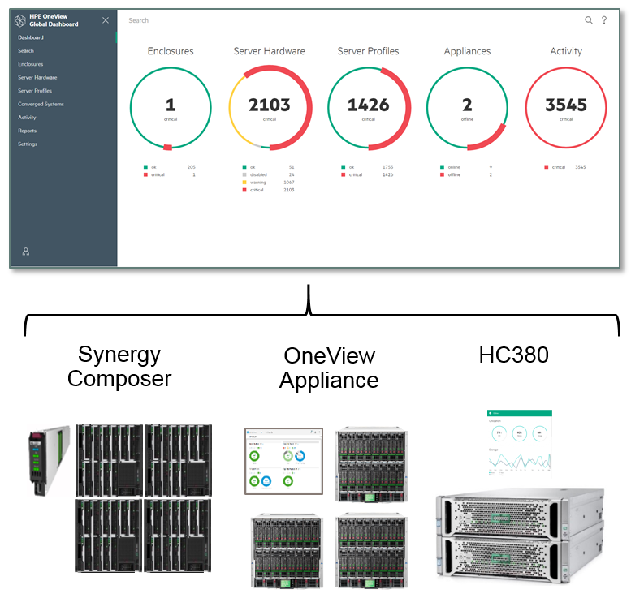

WireMock: Criação de um ambiente confiável e escalável para execução de testes de integração
Luiz Hermes Svoboda Junior
Gustavo Coelho
November, 2017
OneView Global Dashboard

- Helps IT staff troubleshoot alerts and view core inventory data across multiple HPE management systems
- Provides an enhanced infrastructure view for more informed and faster decision-making
- Smart search function that delivers access to devices of interest across data centers in seconds
- Aggregates critical activates from multiple appliances into a single feed to quickly identify issues
- Customizable inventory and compliance report for monitored assets
WireMock
- Simulator for HTTP-based APIs
- Supports testing of edge cases and failure modes that the real API won't reliably produce
- We can even extend current API limitation: extend OneView scale limits
- Ability to inject faulty behavior (delay injection and faulty responses)
- Because it’s fast it can reduce build time
- Run within a Java application or as a standalone process (embedded Jetty)
- Request Matching and Response Templating
- Match request URLs, methods, headers and bodies
- Record and Playback
- Get up and running quickly by capturing traffic to and from an existing API
- Playback using captured traffic data
falando sobre WireMock
- Exemplificar menor numero de recursos
- Pegar uma foto dos numeros do ambiente real
- Cenário com OneView ou com HC380?
- Entendemos que com OneView os números seriam melhores mas não é o ambiente que temos – rodar com ambos indicando que com o OneView temos o desafio do RabbitMQ?
- RESULTADOS
trabalhos futuros
- Incluir aqui questão sobre como rodar os mocks: Containers estáticos VS dinâmicos (criados no momento do teste)
- Mock de outros protocolos: Exemplo: SCMB do Oneview
- Consistência de UUID: Como gerar randomizção e garantir consistência de identificadores
- Injeção de falhas
Integration Testing Environment Approaches
Set of “permanent” containers- Set of containers pre-configured (as many as needed)
- Each container with a set of configurations
- OneView with storage test requirements
- OneView with SPP bundle test requirements
- HC380 (Phoenix)
- HC380 (Hellfire)
- Real/Simulated appliances can also be available
Integration Testing Environment Approaches
Container on-demand- Tests have their Wiremock files “embedded”
- Containers are created/started dinamically before the test execution
- Real/Simulated appliances can also be available
Pending issues
- (OneView) SCMB / MSMB
- Install RabbitMQ (rabbitmq-server) in the Docker container
- (HC380) WebSocket
- mock-socket: Javascript mocking library for websockets and socket.io
Thanks!!
|
Gustavo Coelho
Software Engineer @ Hewlett Packard Enterprise
|
|
Luiz Svoboda
Software Engineer @ Hewlett Packard Enterprise
|